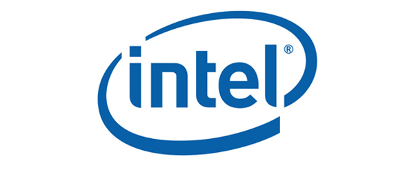

Intel, ABD merkezli, dünyanın en büyük yarı iletken üreticisidir. Şirket, 1968 yılında Gordon E. Moore tarafından kurulmuştur. Adı Integrated Electronics'ten gelmektedir.
İlk olarak 1971 yılında Intel 4004 mikroişlemcisiyle piyasaya çıkmıştır. Günümüzde, bilgisayarların büyük kısmında Intel işlemcilerinin kullanılması, önceden sadece bilgisayar üreticilerinin bildiği mikroişlemci markasını, kullanıcılara da öğreten Intel Inside reklam kampanyası sayesinde olmuştur. Şirketin piyasa değeri 150 milyar dolar civarındadır.
Intel, AMD'nin 1995 yılından sonraki sürecinden olumsuz etkilenmiştir. AMD 1995 yılından sonra araştırma geliştirme etkinliklerine ağırlık vermesiyle, masaüstü bilgisayarlarda kullanılmak üzere ilk olarak 64 bit işlemcilerini piyasaya sürmüştür (Eylül 2003). İntel, AMD'den 64bit patentini satın alıp kendi 64bit işlemcilerini piyasaya sürmüştür.
Dünyanın en büyük yarı iletken firması Intel, teknoloji tarihinde çok önemli bir yere sahip. Bugün işlemci pazarının %80'inden fazlasına hakim olan firma, 49 yıl önce bugün 1968 yılında, Andy Grove, Robert Noyce ve Moore yasasının mucidi Gordon Earle Moore tarafından Santa Clara, Kaliforniya’da kuruldu.
Intel 1971 yılında ilk işlemcisi olan 4004'ü piyasaya sürdü. 4004 pazarda ciddi bir başarı sağladı. Ama 70’li yıllar rekabetin büyük olduğu dönemlerdi ve Intel henüz çok büyük bir firma değildi. Intel 70'lerin ortalarında 8080 mimarisine geçiti. Ama Intel için asıl önemli olan mimari, 1979 yılında ortaya çıktı. O yıl 8086 işlemcisini pazara sürdü. 8086 işlemcisi şu an hala bilgisayarlarımızda kullandığımız, Intel ve AMD'nin ürettiği işlemci mimarisinin temelini yani X86 mimarisini oluşturuyor.
O dönem bilgisayar dünyasının en büyük ismi IBM'di. IBM ile çalışmak gibi bir fırsat elde edenler yükseliyor, fakat IBM ile ters düşen firmalar başarısız oluyordu. 8080 mimarisi çok başarılı oldu ve Intel'in önünü açtı. IBM 8086 serisi işlemcileri kendi PC'lerinde kullanmak için Intel’e teklif götürdü. Ama bir şartı vardı. Tek kaynağa bağımlı kalmak istemeyen IBM, Intel’in işlemcilerinin lisansını, yani üretim haklarını başka firmalara da vermesini istiyordu. Intel bu teklifi kabul etti ve 4 şirkete X86 mimarinin lisans hakkını verdi. Şimdiki en büyük rakiplerinden AMD’ye de lisans hakkı vermek zorunda kaldı.
AMD 1975 yılından beri Intel'in piyasaya sürdüğü işlemcilerin benzerlerini üretiyordu. O tarihten sonra AMD, Intel işlemcilerini yasal olarak üretmeye başladı. Aynı dönemde diğer büyük bilgisayar üreticileri de Intel ile çalışmaya başladı. Intel’in mali gücü arttıkça, işlemci teknolojisini artırdı ve çok başarılı işlemciler ortaya çıkardı.
90'lı yıllara gelindiğinde Intel çok büyümüştü, artık yarı iletken endüstrisinin en büyük firmasıydı. Pentium serisi üzerinde çalışmaya başladı. Pentium 3 Intel'in tarihindeki en başarılı işlemci serilerinden biri oldu ve sadece profesyonel bilgisayarlarda değil, Windows 95 ile evlere giren masaüstü bilgisayarlarda da yayıldı. Intel, Microsoft ile iyi bir işbirliği yaptıktan sonra, işlemci dendiğinde insanların aklına gelen tek marka oldu.